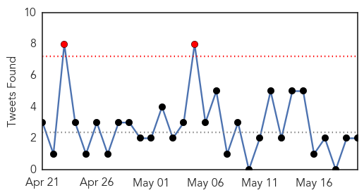
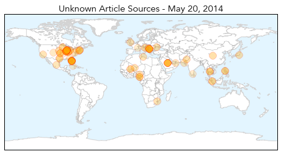
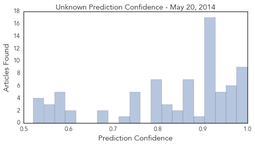
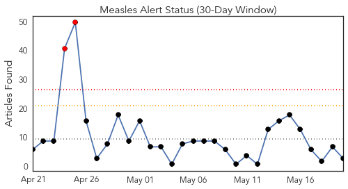
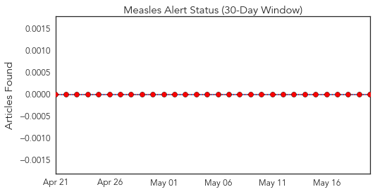
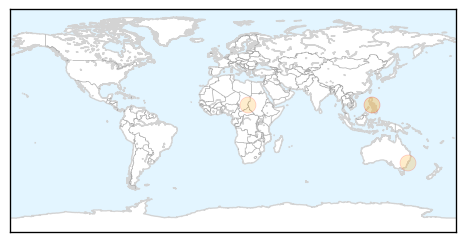
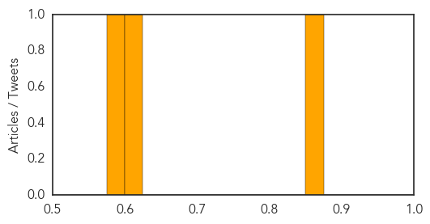

Unknown
30-Day Web Trend
6 alerts, 4 warnings

30-Day Twitter Trend
2 alerts, 0 warnings

Article Locations
Article Confidences
Top Articles:
- 1.000
- An American has MERS: Where did virus come from?
- 0.998
- MERS virus now present in the US
- 0.997
- MERS patient discharged from Orlando hospital
- 0.993
- ‘Third Mers case in US is not infectious’
- 0.991
- MERS now in 18 countries; three in U.S. confirmed to have viral illness
- 0.989
- How MERS Made The Leap From Animals To Humans
- 0.986
- Two healthy Greene County residents tested for MERS
- 0.979
- U.S. doctor exposed to MERS leaves Canada
- 0.978
- Doctor exposed to MERS in Florida hospital remained healthy, left Canada
- 0.974
- Foreign health workers in Saudi could spread MERS
- 0.969
- Details of Illinois MERS patient emerge
- 0.966
- Rhode Island lifts widespread flu declaration
- 0.961
- The Portland Press Herald / Maine Sunday Telegram
- 0.958
- Two positive rabies cases discovered at Fort Hood
- 0.955
- Risk of spread of Middle East virus 'low' in U.S.
- 0.952
- Florida MERS Patient Released From Hospital
- 0.949
- MERS patient from Saudi Arabia released from Florida hospital; officials say he's recovered
- 0.948
- UN agencies step up emergency response to flood victims in Balkans
- 0.947
- Ban expresses concern for flood-hit Balkans as UN scales up disaster response
- 0.933
- MERS Has Arrived on American Soil
- 0.921
- Bird flu experiments pose threat, researchers warn
- 0.917
- Chicago Tribune
- 0.917
- Chicago Tribune
- 0.917
- Chicago Tribune
- 0.917
- Chicago Tribune
- 0.917
- Chicago Tribune
- 0.917
- Chicago Tribune
- 0.917
- Chicago Tribune
- 0.917
- Chicago Tribune
- 0.917
- Chicago Tribune
- 0.917
- Chicago Tribune
- 0.917
- Chicago Tribune
- 0.917
- Chicago Tribune
- 0.917
- Chicago Tribune
- 0.917
- Chicago Tribune
- 0.912
- Lassa fever: Six medical workers confirmed positive in Ebonyi
- 0.910
- The world windows to Thailand
- 0.889
- 6 Nigerian health workers test positive to Lassa fever
- 0.866
- Nigeria emergency management agency
- 0.866
- U.S. says has not had recent contact with Libya's Haftar
- 0.866
- S.Africa platinum firms, striking union return to mediated talks
- 0.866
- Thailand's justice minister says govt still running country
- 0.866
- Thai pro-government activist urges restoration of "democratic principles"
- 0.866
- Two people killed, 55 wounded in clashes in Libyan capital-minister
- 0.866
- Mali "at war" with northern Tuareg separatists
- 0.844
- One-third of the world infected with TB, new efforts needed
- 0.834
- WHO warns of possible epidemic in Serbia
- 0.828
- County resident hospitalized for E. coli, possibly linked to undercooked ground beef
- 0.821
- Deadly pig virus likely to ease in US by year-end
- 0.811
- Doctors: Illinois MERS patient not contagious
Showing top 50 articles...
Top Tweets:
- 0.786
- Trivia Tuesday: During the Spanish Flu pandemic, gatherings were banned in some cities, in hope to limit the spread of the flu.
- 0.632
- Un elefante en una playa de Florida: Todd Unbehagen estaba caminando en la playa con su familia en el condado ... http://t.co/wgwZom8uHO
Measles
30-Day Web Trend
2 alerts, 0 warnings

30-Day Twitter Trend
0 alerts, 0 warnings

Article Locations
Article Confidences
Top Articles:
Top Tweets:
-
No tweets found for May 20, 2014